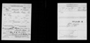

My Family Tree
Person Chart
Parents
| Father | Date of Birth | Mother | Date of Birth |
|---|---|---|---|
 Marcus Williams Marcus Williams |
1832 |  Mary Mary |
1835 |
Partners
| Partner | Date of Birth | Children |
|---|---|---|
| Mary S. Williams |
3/1857 | Roy Morrison WilliamsLista Mary WilliamsAlexander C. Williams |
 Birth
BirthNotes
| PA 1910 Miracode Index Franj Z age 23 |
Sources
Media
Pictures

1917-1918 Roy Morrison Williams United States World War I Draft Registration Cards